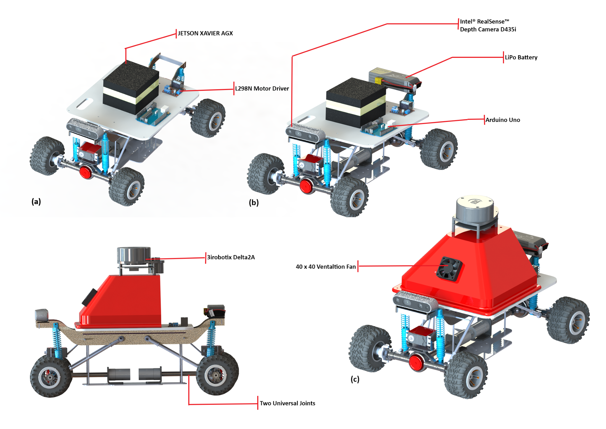
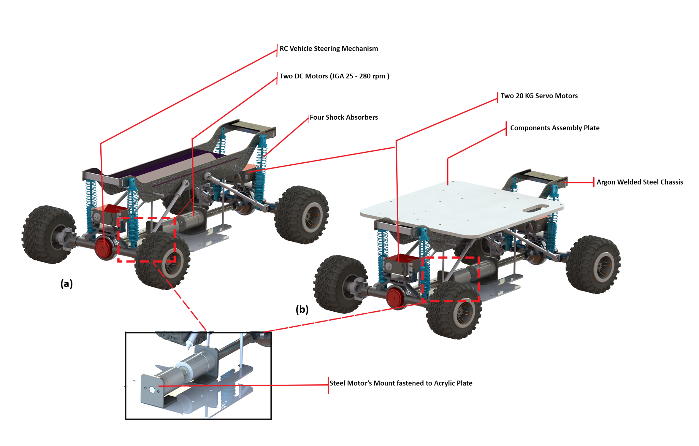

Engineering · BSc graduation project
Reinforcement Learning for Autonomous Parking
A BSc graduation project that paired reinforcement learning in simulation with the design of a four-wheel-steering vehicle.


Learning to park
In Gazebo, a Proximal Policy Optimization (PPO) agent used LiDAR and odometry to choose forward and reverse actions at different speeds and steering angles. The reward favored getting closer to a target parking position in fewer steps and penalized getting too close to walls.
Four-wheel steering
Both axles can steer. At low speeds, the rear wheels turn opposite the front wheels to tighten the turning radius. The thesis used Ackermann steering geometry and compared two- and four-wheel steering in V-REP, including parallel and perpendicular parking maneuvers.
Simulation results
The team evaluated tabular Q-learning and PPO on obstacle avoidance. Q-learning rewards kept oscillating, while the PPO agent learned to avoid obstacles. In the separate parking task, PPO reached the target and learned to complete episodes in fewer steps.
My contribution
I worked on reinforcement learning for navigation and helped develop the four-wheel-steering prototype.
Chassis and steering assembly

Graduation project demo
Tools & methods
PPO, tabular Q-learning, ROS, Gazebo, V-REP, SolidWorks, Ackermann steering